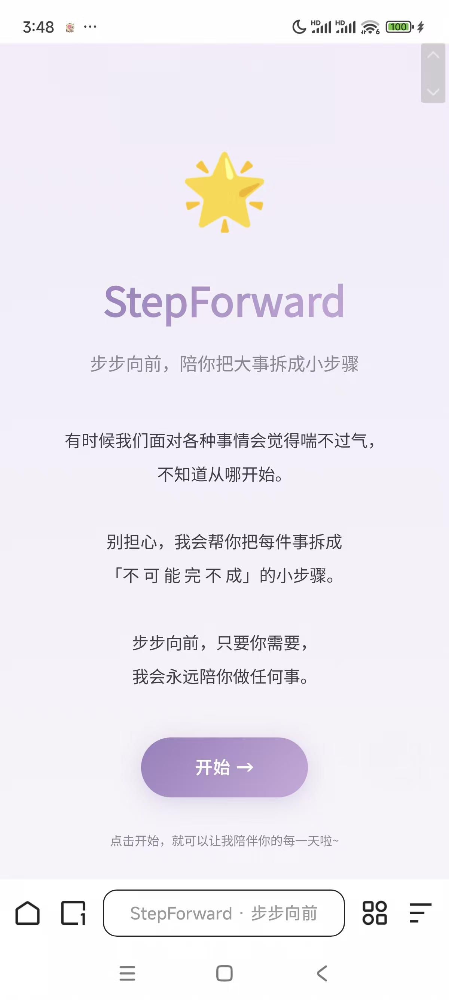
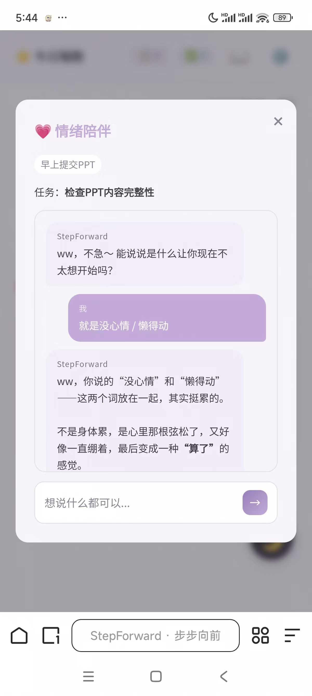

关于我
我是一名 独立 AI 产品实践者。2026 年，我从科研转向 AI 产品，一年内独立完成并上线了 4 个作品：行动支持、语言学习、内容社区、AI 陪伴机制——四种不同形态的陪伴与连接。
我相信 AI 时代做产品的核心能力不是写代码，而是定义问题、判断模型能力、对结果负责；AI 产品最有价值的部分是「对人的理解」。欢迎通过 email 联系我。
我的 2026 · 从实验室到 AI 产品
2026.06
科研收束，转向产品。硕士毕业；两篇 SCI 一区论文落定（Cell Death & Disease 二作 · Cell Reports 四作）。把「假设 → 实验 → 度量 → 迭代」从实验室带进 AI 产品。
2026.07作品 01
StepForward v1.0 MVP 上线 —— AI 陪伴式行动支持工具，为「行动力持续不足」人群设计：先接住情绪，再跟进行动。从 0 到 1 负责产品定义、交互、AI 接入与迭代决策。


2026.08
StepForward 迭代至 v2.2.8：新手引导、成长日记、睡前安心仪式；统一接入 6 家 LLM（多 Provider 降级），单次拆解 token 成本平均下降约 40-60%；建立双重危机安全边界，接入 3 条援助热线。
2026.09验证
完成第一轮内测（N=5），「被接住」的情绪陪伴价值获确认，9 项问题识别、5 项已落地。
2026.10作品 02
ListentoMe v0.3.0 上线 —— 英语精听练习工具：导入文本/PDF → 语块切分 → 逐句精听 → 跟读评分 → 标记复习。以 PRD → 技术方案 → ROADMAP 账本驱动迭代。
2026.10作品 03
蟲鸣岛 上线 —— 中英双语生态生活杂志站：故事地图、生态好物、活动日历与订阅；Supabase 后台 + 三级数据降级保证弱网可用。
2026.10作品 04
小栖 上线 —— AI 陪伴对话机制演示：人设锚、事件化记忆（含删除反向链路）、L1-L4 分层响应路由、危机击穿拦截与成本估算。
接下来
用真实行为数据验证 StepForward 的留存假设；让 ListentoMe 走完精听闭环打磨；继续做「连接」类产品。
进作品集看完整案例 →
做产品的过程中我写了一些 产品思考文章，记录踩过的坑、做出的判断，和对 AI 产品的思考。
从女性向陪伴类游戏体验到依恋机制模式沉淀
基于恋与深空 / 光与夜之恋 / 恋与制作人的一手体验，拆解「可及性 → 回应性 → 心动」三层情感联结结构，提出「模型层制造回应性、系统层制造独占性」的 AI 陪伴设计框架。
AI 陪伴者与用户的关系
从自身「行动力瘫痪」的真实经历出发，借依恋理论、共同调节、行为激活三个心理学框架，提出 AI 陪伴者的定位——「过渡性安全连接」。核心主张：不是替代，是过渡；不是依赖，是支撑。
AI 人格设计与 Agent 适用边界
沉淀人格设计四机制：反空话套话、共享底线、长在用户身上、安全边界紧急熔断；并给出 Agent 化的判断标准——关键不在「AI 能不能做」，而在「用户会不会因此更舒服」。
StepForward · 第一轮内测 小样本，真问题
如实说明局限
样本量小，仅作方向性参考；所有问题均在可容忍区间，无人选「严重到不想用」。北极星指标 + 4 条漏斗 + 20+ 埋点事件的度量体系已完成设计，待后端上线后用真实行为数据验证留存假设。
查看完整报告 →
精选论文 学历背景
Cell Death & Disease · SCI 一区 · IF≈12 · 第二作者
Yuemei Wen, et al. ｜ 2026 · Accepted
Cell Reports · SCI 一区 · IF≈7 · 第四作者
Yuemei Wen, et al. ｜ 2026 · Published